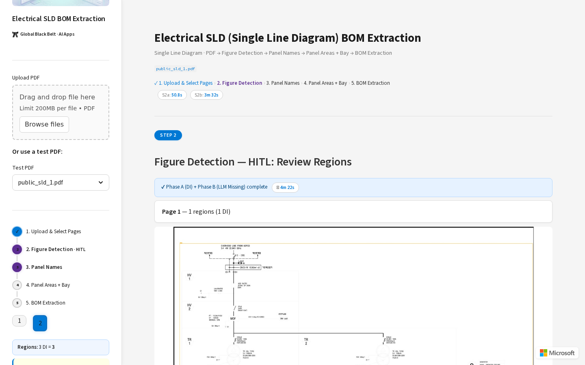
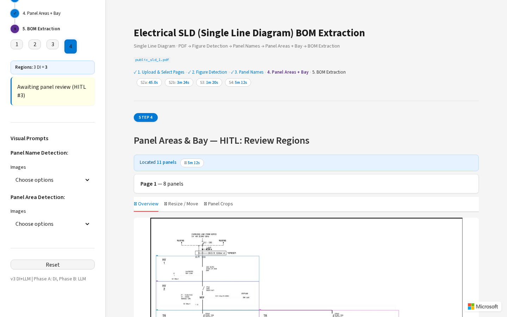
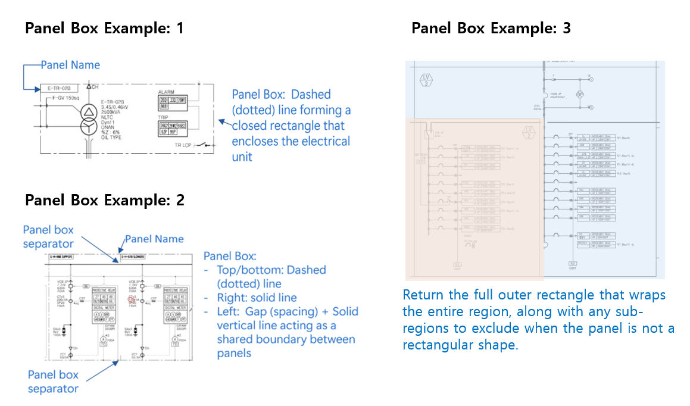
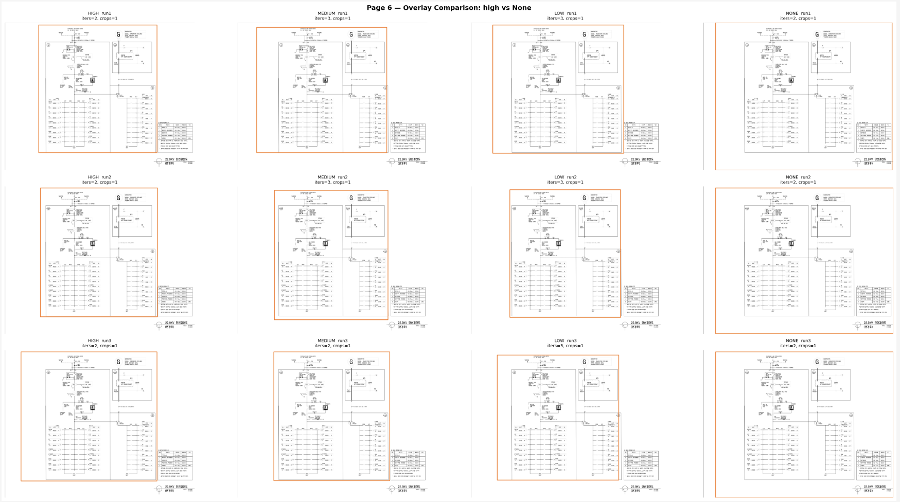
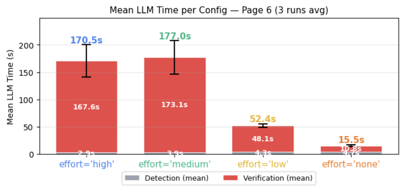
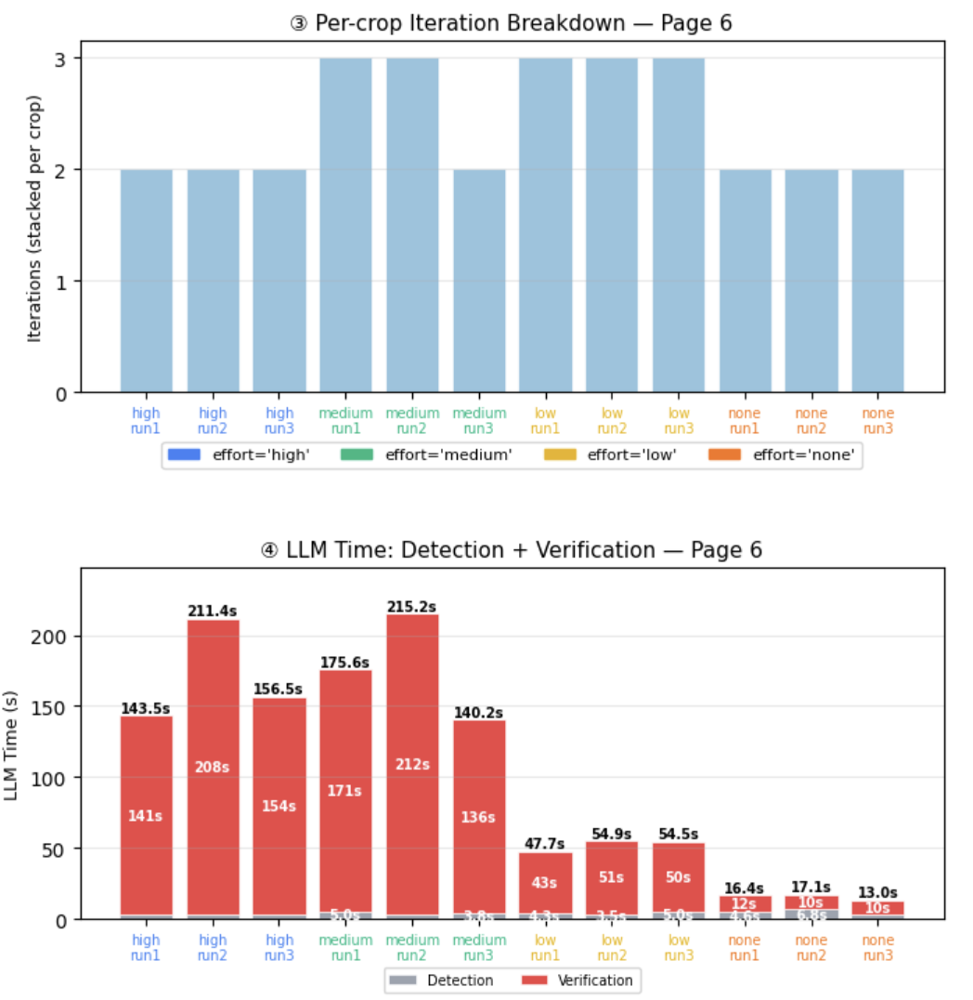
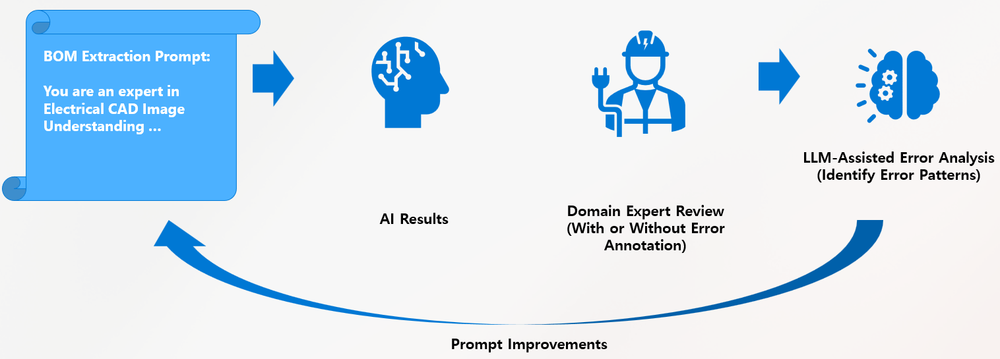

The Problem
Electrical engineering drawings — especially single-line diagrams (SLDs) — are notoriously hard to parse programmatically. They combine dense symbols, small text, and complex geometric structures, all varying in style across documents and vendors.
Traditionally, extracting a Bill of Materials (BOM) from electrical drawings has been a manual task — engineers or hired temporary workers would read through each diagram page by page and transcribe component lists by hand. It is time-consuming, error-prone, and does not scale.
The obvious question: can a Vision Language Model automate this?
We had to rely primarily on the visual content of PDF-converted images alone — without guaranteed access to supplementary structural information like CAD vector data or metadata. That constraint is the core challenge this pipeline was designed to solve.
Why naive LLM inference fails: Simply feeding a full diagram page to an LLM and asking for a BOM fails catastrophically — too much visual complexity in a single context. Components get missed, hallucinated, or assigned to the wrong panel.
Pipeline Architecture: Divide and Conquer
The core insight: the unit of analysis must be the panel, not the page.
A single diagram page can contain dozens of panels, each representing a distinct electrical cabinet with its own set of components. Asking a model to extract a complete BOM from an entire page is asking it to simultaneously locate, read, and count every component across all panels — a task that proved too complex even for GPT-5.
The solution was to first identify and crop each panel as an independent region, then extract the BOM panel by panel. This transformed an intractable whole-page problem into a series of manageable, well-scoped sub-tasks.
flowchart TD
A["📄 PDF Input"] --> B
subgraph B[" Stage 1 · Page Segmentation "]
B1["PyMuPDF\nPDF → PNG & SVG"] --> B2["Azure Document Intelligence\n2-Pass Figure Detection"]
end
B --> C
subgraph C[" Stage 2 · GPT-5 Assisted Region Detection "]
C1["Grid Overlay\n+ Coordinate Labels"] --> C2["GPT-5\nDetect Missed Regions"]
C2 --> C3["GPT-5\nVerify & Correct Boundaries"]
end
C --> D
subgraph D[" Stage 3 · Panel Name Extraction & Matching "]
D1["GPT-5\nTile-Based Name Extraction"] --> D3["6-Pass Rule Engine\n+ LLM Fallback Matching"]
D2["Azure DI OCR\nText & Coordinates"] --> D3
end
D --> E
subgraph E[" Stage 4 · Panel Area Segmentation "]
E1["GPT-5\nLocate → Verify Loop\n(max 10 iterations)"]
end
E --> F
subgraph F[" Stage 5 · Bay Split & BOM Extraction "]
F1["GPT-5\nBay Subdivision"] --> F2["GPT-5\nExtract BOM per Bay"]
end
F --> G["✅ Structured BOM Output"]
style C2 fill:#4A90D9,color:#fff
style C3 fill:#4A90D9,color:#fff
style D1 fill:#4A90D9,color:#fff
style E1 fill:#4A90D9,color:#fff
style F1 fill:#4A90D9,color:#fff
style F2 fill:#4A90D9,color:#fff
style B2 fill:#E67E22,color:#fff
style D2 fill:#E67E22,color:#fff
style D3 fill:#8E44AD,color:#fff
style B1 fill:#7F8C8D,color:#fff
style C1 fill:#7F8C8D,color:#fff
style A fill:#2C3E50,color:#fff
style G fill:#27AE60,color:#fff
The pipeline is implemented as a chain of 7 executor stages, each with a single well-defined responsibility and structured message passing between stages:
| # | Stage | Executor | Role |
|---|---|---|---|
| 1 | Segment | SegmentExecutor | PDF → per-page PNG/SVG images |
| 2 | Detect | DetectExecutor | DI 2-pass figure detection + OCR line extraction |
| 3 | NameExt | NameExtExecutor | Tile-based panel name extraction + dedup + hallucination guard |
| 4 | Match | MatchExecutor | 6-pass rule matching + LLM fallback for name → location mapping |
| 5 | LocateVerify | LocateVerifyExecutor | Iterative Locate → Verify loop per panel (max 10 iterations) |
| 6 | Validation | ValidationExecutor | Cross-panel validation + HITL routing |
| 7 | BaySplit | BaySplitExecutor | Bay subdivision + final BOM extraction |
Three Human-in-the-Loop (HITL) checkpoints are integrated into the pipeline via a Streamlit UI, allowing domain experts to review and correct intermediate results:
| HITL # | After Stage | What's Reviewed |
|---|---|---|
| 1 | Figure Detection | Review & edit detected image regions with an interactive canvas editor |
| 2 | Panel Names | Confirm or correct extracted panel names |
| 3 | Panel Areas | Review low-confidence panels (confidence < 0.7), adjust bounding boxes |


1 Two-Pass Document Intelligence Detection
The first stage converts each PDF page into high-resolution PNG images using PyMuPDF, with DPI automatically computed per page based on minimum font size to ensure text remains legible.
# DPI computation: ensures smallest text is readable
# Formula: target_min_px × 72 / font_pt
# Clamped to [72, 720], rounded to nearest 72
dpi = compute_dpi_for_pdf(pdf_path)
pages = split_pdf_to_pages(pdf_path, output_dir, dpi)
Azure Document Intelligence's prebuilt-layout model then detects figure regions and extracts OCR text.
However, a single pass often misses figures that are visually occluded by larger detected regions. The solution:
two-pass detection with white-fill erasure.
Two-Pass Detection Strategy
# Pass 1: Analyze original page
pass1 = analyze_page(di_client, "prebuilt-layout", image_path)
pass1_bboxes = [f["bbox"] for f in pass1["figures"]]
# Pass 2: White-fill Pass 1 detections, re-run DI
if pass1_bboxes:
white_fill_regions(image_path, pass1_bboxes, whitefill_path)
pass2 = analyze_page(di_client, "prebuilt-layout", whitefill_path)
# Merge & deduplicate by IoU
all_figures = pass1["figures"] + pass2["figures"]
deduped = _dedup_figure_bboxes(all_figures, iou_threshold=0.5)Why it works: Pass 2 reveals figures previously hidden beneath large detected regions, achieving comprehensive coverage. After DI detection, GPT-5 supplements by detecting regions missed by both passes, using a numbered grid overlay as spatial reference.
2 Hybrid LLM + OCR for Text Localization
To segment panel areas, we first need to know where panel names appear in the image. Panel names act as anchor points — once we know their locations, we can use them as seeds to identify the boundaries of each panel region.
Neither GPT-5 nor OCR alone is sufficient:
- GPT-5: great at identifying what the text says, but imprecise on exact pixel locations
- Azure Document Intelligence: precise coordinates for all text, but struggles with domain-specific abbreviations and electrical symbols
Step 1: Tile-Based Name Extraction
Rather than feeding the entire page to the LLM, we split it into overlapping vertical tiles (2000px wide, 400px overlap) and extract panel name candidates from each tile independently. This reduces visual complexity per LLM call and improves recall.
# Split page into overlapping tiles for LLM name extraction
tiles = tile_page(image_path, tile_width=2000, overlap=400)
# Extract names from each tile independently
for tile_img, tile_coords in tiles:
names = extract_names_from_tile(tile_img, llm_client, deployment)
# LLM identifies SHORT CODES: "HV 1", "TR-2", "LV 3A"
# Rejects: component labels, wire tags, terminal IDsStep 2: Hallucination Guard
LLMs sometimes fabricate panel names that don't exist in the image. We cross-validate all LLM-extracted names against the DI OCR text pool using fuzzy matching:
def hallucination_guard(names, di_lines):
verified = []
for name in names:
if _name_in_ocr(name, ocr_texts): # 3 matching modes:
verified.append(name) # 1. Exact substring
# 2. Same length, ≤1 char diff
# 3. Alphanumeric stripping (ignore spaces/punctuation)
else:
print(f" Dropped '{name}' — no OCR match")
return verifiedStep 3: 6-Pass Rule Matching Engine
Once names are verified, we need to locate their exact pixel positions. Rather than relying on the LLM for localization, we implemented a cascading rule engine that matches panel names against DI OCR bounding boxes with decreasing confidence:
flowchart LR
A["Panel Name\nCandidates"] --> B["Pass 1\nExact Match\n★ 1.0"]
B --> C["Pass 2\nAlphanumeric\n★ 0.9"]
C --> D["Pass 3\nSubstring\n★ 0.75"]
D --> E["Pass 4\nMulti-line\nMerge ★ 0.7"]
E --> F["Pass 5\nOCR-Similar\n★ 0.6"]
F --> G["Conflict\nResolution"]
G --> H["LLM Fallback\n(unresolved)"]
H --> I["Matched\nBboxes"]
style A fill:#2C3E50,color:#fff
style B fill:#27AE60,color:#fff
style C fill:#27AE60,color:#fff
style D fill:#F39C12,color:#fff
style E fill:#F39C12,color:#fff
style F fill:#E74C3C,color:#fff
style G fill:#8E44AD,color:#fff
style H fill:#4A90D9,color:#fff
style I fill:#2C3E50,color:#fff
def rule_match_panel_name(panel_name, di_lines, max_merge=3):
# Pass 1: Exact match (case-insensitive) → confidence 1.0
# Pass 2: Alphanumeric (O/0, I/1 tolerance) → confidence 0.9
# Pass 3: Substring containment (≥3 chars) → confidence 0.75
# Pass 4: Multi-line merge (adjacent DI lines) → confidence 0.7
# Pass 5: OCR-confusable (1-char diff, v↔y, s↔5) → confidence 0.6
# Conflict resolution: shared bbox → keep highest confidence
# LLM fallback: for still-unmatched namesWhy this hybrid approach works: The LLM identifies what the panel names are (semantic), while Azure DI provides where they are (geometric). The rule engine bridges the two with OCR-aware fuzzy matching. This is significantly more robust than either system alone.
3 Iterative Locate → Verify with Oscillation Guard
With panel names located, the next challenge is identifying the full panel boundary — the bounding box that encloses all electrical components belonging to that panel. This is arguably the hardest stage in the pipeline: panels can be irregularly shaped, share edges with neighbors, and have boundaries formed by a mix of dashed, solid, and implied lines.
Rather than asking the LLM to find the boundary in one shot (which is unreliable), we implemented an iterative Locate → Verify correction loop with up to 10 attempts per panel.
flowchart TD
A["Start: Panel Name + Location"] --> B["Compose Locate Input\n(Grid + Blue NAME box + Green neighbors)"]
B --> C["GPT-5: Locate Panel Bbox"]
C --> D{"Bbox contains\nname location?"}
D -->|No| B
D -->|Yes| E["Compose Verify Input\n(Grid + Orange PANEL box)"]
E --> F["GPT-5: Verify 4 Edges\n(ok / expand / shrink)"]
F --> G{"All edges ok?"}
G -->|Yes| H["✅ Panel Verified\n(confidence: 0.95)"]
G -->|No| I{"Attempt < 10?"}
I -->|Yes| J["Apply Corrections\n+ Oscillation Guard"]
J --> B
I -->|No| K["⚠️ Best-effort Bbox\n(lower confidence)"]
style C fill:#4A90D9,color:#fff
style F fill:#4A90D9,color:#fff
style H fill:#27AE60,color:#fff
style K fill:#E67E22,color:#fff
Visual Prompt Composition
Each iteration constructs a carefully composed image for the LLM, providing spatial context through visual overlays:
Locate Input
- Gray numbered grid overlay (120px spacing)
- Blue box — target panel name location (
NAME:{panel_name}) - Green boxes — other panels as spatial reference
Verify Input
- Gray numbered grid overlay
- Orange box — current proposed panel bbox (
PANEL) - Blue box — panel name location
- Green boxes — neighboring panels
The verify step analyzes each edge independently and returns a structured JSON response:
// Verify response schema
{
"valid": false,
"edges": {
"x1": { "status": "expand", "delta": -45, "corrected": 120 },
"y1": { "status": "ok" },
"x2": { "status": "shrink", "delta": -30, "corrected": 850 },
"y2": { "status": "expand", "delta": 60, "corrected": 1200 }
},
"corrected_bbox": [120, 200, 850, 1200]
}Oscillation Detection
A critical failure mode we discovered: the LLM can oscillate on an axis — expanding, then shrinking, then expanding again — never converging. We implemented oscillation detection using a 3-value history per axis:
# Track last 3 corrections per axis
axis_history = {axis: [] for axis in ["x1", "y1", "x2", "y2"]}
for attempt in range(1, max_tries + 1):
# ... locate and verify ...
for axis in AXES:
hist = axis_history[axis]
if len(hist) >= 3:
a, b, c = hist[-3:]
# Detect: (a < b > c) or (a > b < c) → oscillating
if (a < b and b > c) or (a > b and b < c):
corrected[axis] = hist[-2] # Freeze at previous value
# Prevents infinite oscillation loopsThe iterative loop processes all panels on a page in batch mode — a single locate-all LLM call
positions all panels simultaneously, followed by batch verification with individual crop images. This reduces
per-panel LLM calls from N to 1.
4 Few-Shot Image Guidelines
Text prompts alone struggle to convey spatial concepts like "what a panel boundary looks like" — the visual vocabulary of electrical drawings is too domain-specific to describe in words alone. The solution: provide GPT-5 with few-shot reference images directly in the prompt.
def locate_and_verify_batch(..., guide_image_paths=None):
guides = list(guide_image_paths or [])
# Prepend guide images to LLM inputs:
loc_raw = call_llm(
llm_client, deployment, locate_prompt,
image_paths=guides + [locate_img_path], # Guides first
label=f"locate ALL {len(all_panel_names)} panels"
)
The benefits of this approach:
- Reduces prompt length — no need to describe visual concepts in words
- Improves consistency — the model interprets boundary types correctly across varying layouts
- User-customizable — swapping in new guide images adapts the system to new drawing styles, without rewriting any prompts
5 Reasoning Mode — Performance vs. Cost
GPT-5's reasoning capability (reasoning={"effort": "low|medium|high"}) significantly affects
both accuracy and latency. We ran systematic experiments across all four reasoning levels to quantify these trade-offs
in two key pipeline stages: image area detection and BOM extraction.
Reasoning Mode in Image Area Detection
We tested all four reasoning effort levels (high, medium, low, none) on the image region detection stage — where GPT-5 detects and verifies electrical figure boundaries. Each configuration was run 3 times to ensure consistency.
Detection Quality

high consistently requiring fewer verification iterations (2) while medium and low
sometimes needed 3 iterations to converge.
Verification Iterations

high reasoning converged in 2.0 iterations on average, while medium needed 2.7
and low needed 3.0. Interestingly, none also converged in 2.0 iterations —
but with significantly lower boundary accuracy.
LLM Processing Time

high and medium are dominated by verification time (~170s),
while low drops to ~52s and none to ~15s.
Detection time itself is negligible across all modes.

high/medium runs range from 140–215s total,
low stabilizes around 48–54s, and none completes in just 13–17s.
The per-crop iteration chart (top) confirms all modes detect the same regions, but differ in convergence speed.
Finding: For image area detection, low reasoning is the optimal choice.
It achieves the same detection quality as high/medium at ~3× less time,
with only 1 additional verification iteration on average. none is fastest but produces less precise boundaries.
Reasoning Mode in BOM Extraction
For the downstream BOM extraction stage — where GPT-5 reads component lists from cropped panel images — the reasoning impact is more pronounced on accuracy:

| Reasoning Effort | Accuracy | Processing Time |
|---|---|---|
| Low | ~86% | ~2,200–2,400s |
| Medium | ~89–91% | ~3,700–4,100s |
| High | — | Timeout |
Recommended Configurations
| Pipeline Stage | Recommended Effort | Rationale |
|---|---|---|
| Image region detection | low | Same quality as high/medium at ~3× less cost |
| Region verification | low | Sufficient with visual context (grid overlays) |
| BOM extraction | medium | +3–5% accuracy over low; high causes timeouts |
| Rich visual guidance provided | low or none | Visual context compensates for reduced reasoning |
Key insight: Different pipeline stages benefit from different reasoning levels.
Use low for spatially-grounded tasks (detection, verification) where visual context is rich,
and medium for semantically-demanding tasks (BOM extraction) where reading precision matters.
Optimize inputs before scaling compute.
6 Expert-in-the-Loop Prompt Refinement
The single largest accuracy jump came not from any algorithmic change, but from a structured feedback loop with domain experts.

The loop works as follows:
- Extract: GPT-5 extracts BOM results from each cropped panel image
- Review: A domain expert reviews the output and flags incorrect entries (annotation is optional — even a simple pass/fail review is sufficient)
- Analyze: GPT-5 analyzes the error patterns to suggest concrete prompt improvements
- Refine: The refined prompt feeds back into the next extraction run
This feedback loop drove a +5.43% overall accuracy improvement (88.78% → 94.21%) over the course of the project. The improvement varied by diagram section — some improved by nearly 10%, while one slightly regressed due to over-tuning.
BOM Extraction Results
| Metric | Value |
|---|---|
| Overall accuracy | 94.21% |
| Panels processed | 53 |
| Materials extracted | 346 |
| Correctly identified | 277 / 294 |
| Total processing time | ~62 min (from pre-cropped panels) |
Despite strong overall accuracy, three recurring error patterns were identified:
1. Misreading of Domain Abbreviations
10CCT 1EA (10 circuits, quantity 1) was extracted as CCT 10 EA — numeric prefix and abbreviation
swapped in meaning.
2. Multiplier Misinterpretation in 3-Phase Configurations
CTx2 / SAx3 suffix notation was sometimes treated as a component name rather than a quantity multiplier —
resulting in PTx3 6EA instead of the correct PTx3 2EA.
3. Spec vs. Quantity Confusion
Electrical rating numbers appearing alongside component entries were occasionally mistaken for quantity values.
System Design Principles
🛡️ Reliability
Each stage has a single well-defined responsibility. When one approach fails, a fallback is always in place: GPT-5 fills in where DI detection misses, OCR coordinates back up LLM name candidates, and the verification loop catches what initial extraction misses.
🔒 Consistency
temperature=0 for all non-reasoning calls. Each experiment was run multiple times and averaged
to ensure improvements reflected genuine signal, not lucky runs.
🌐 Generality
Multi-layer fallback: drawings come in many forms — some have rich OCR text, others are scanned images. Each stage degrades gracefully rather than failing hard.
🔧 Extensibility
Domain experts can refine behavior at any time through additional prompting and few-shot examples, without touching the underlying code.
Key Takeaways
- Decompose aggressively. Stage-wise processing with scoped inputs is not just better than whole-page inference — it's the difference between working and not working.
- Visual context beats reasoning effort. Grid overlays and few-shot images reduce the model's reliance on expensive reasoning modes. Optimize inputs before scaling compute.
- Verify, but stop early. Self-correction loops consistently improve accuracy — but accumulated context can confuse the model. Oscillation detection and early stopping are as important as the loop itself.
- Hybrid always wins. Azure DI for precise text locations, GPT-5 for semantic understanding. Pure LLM solutions lose on precision-critical tasks.
- Domain expertise belongs in the prompt. The largest accuracy gain (+5.43%) came from the expert feedback loop — not from any algorithmic change. AI engineering and domain engineering are inseparable.
What's Next
- Tighter integration with native CAD vector data (SVG line clustering) for higher geometric precision
- AI-assisted human review interface to streamline the expert feedback loop
- Smarter handling of 3-phase quantity notation and electrical specification fields
- Automated evaluation harness for continuous prompt improvement
Stack: Azure OpenAI GPT-5, Azure Document Intelligence | Framework: Python, FastAPI, Streamlit | PDF Processing: PyMuPDF